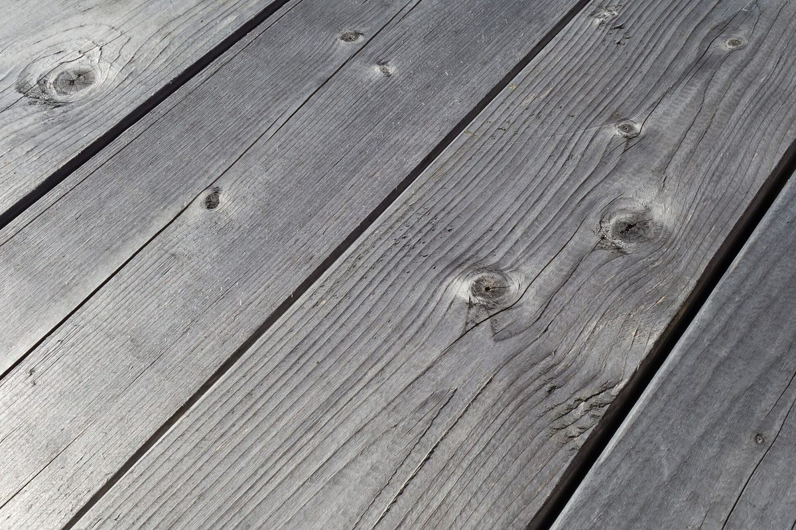

制作側の連想
二段ベッドの部位を、配置図にしてみる
二段ベッドの部位を図にしたもので、制作側の連想です。お店の理念・由来とは無関係で、実際の製品の仕様を示すものでもありません。 六つの部位に番号をふり、上の図と並べています。
凡例
六つの部位
- 1柵上段の縁に取り付けた手すり状の部分で、寝返りのときに体が外へ出ないようにするところ。
- 2床板上段でマットレスを受ける板の部分で、すき間のあるすのこ状の形もある。
- 3はしご上段へ登り降りするための段のついた部分で、枠に引っ掛けて使う形もある。
- 4支柱上の段と下の段を支える縦の柱で、四隅に立つ。
- 5連結ボルト支柱と横の枠をつなぐ金具で、ねじで締めて固定する。
- 6下段のフレーム下の段でマットレスを受ける枠の部分で、床に近い位置にある。
写真(イメージ)
写真(イメージ)





写真はイメージです。お店のものではありません。
ご案内
お店のこと(確認できたものだけ)
| 所在地 | 〒300-0011 茨城県土浦市神立中央５丁目２１−８ |
|---|---|
| 電話 | 準備中 |
| 営業時間 | 準備中 |
| 定休日 | 準備中 |
| ご予約 | 準備中 |
| 駐車場 | 準備中 |
| SNS | Instagram @komugi_tuchiura |